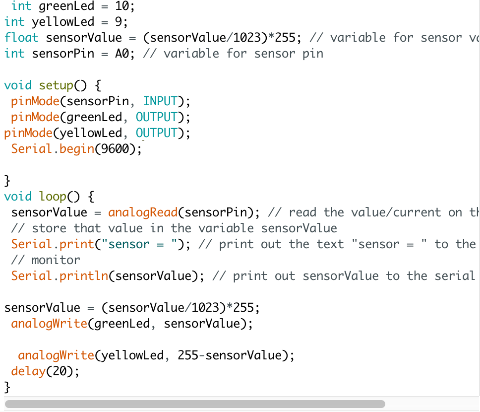
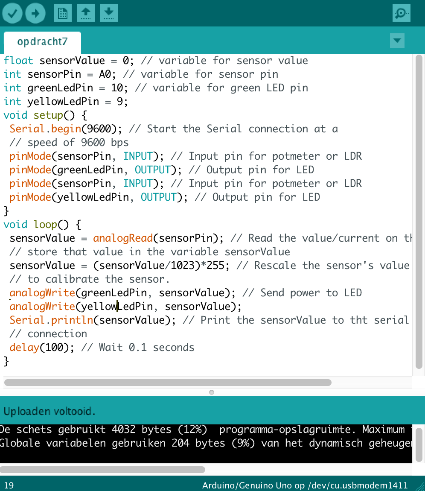

Assignments
3c
Deze opdracht hield in dat het groene ledje twee keer zo snel moest knipperen dan het gele ledje.
Eerst geef ik in de code aan waar de lampjes verbonden zijn aan de arduino. Vervolgens laat ik het groene ledje aan-uit-aan-uit gaan, en het gele ledje aan-aan-uit-uit.
4c
Opdracht 4 ging om het dimmen van de ledjes, eerst moesten we dat doen met één lampje, vervolgens moesten we bij opdracht c het ene lampje laten dimmen en het andere lampje tegelijk langzaam aan laten gaan.
De arduino deed helaas niet helemaal wat ik wilde. De lampjes dimmen wel, maar wisselen elkaar niet af. Terwijl de code wel goed lijkt te zijn, ik laat het ene lampje steeds feller worden, en de andere afnemen.
6c
In opdracht 6 moesten we de lampje aan en uit kunnen draaien met een schakelaar. De bedoeling van opdracht 6c was dat het ene lampje uit moest gaan en de andere aan als er aan de schakelaar wordt gedraaid.
De schakelaar bepaald de waarde van de intensiteit van het licht. Het ene lampje is dus de waarde van de schakelaar, en de andere trekt de waarde van de schakelaar af van de beginwaarde.
7
In opdracht 7 controleren we de lampjes met een lichtsensor.
In de code is te zien dat de lampjes de waarde aannemen die wordt gemeten door de sensor.
8b
In opdracht 8 combineren we Arduino met Processing. Op de arduino is een lichtsensor aangesloten. De Processing code reageert op de waarde die wordt gemeten door de lichtsensor. Door mijn hand boven de sensor te houden kon ik de vierkant laten verplaatsen en groter en kleiner maken.
9f
In opdracht 9 werken we met knopjes. De bedoeling is dat het lampje gaat branden als je op één van de knopjes drukt, maar niet brandt als je op allebei de knopjes drukt.
HIGH wilt zeggen dat de knop ingedrukt is en bij LOW is de knop niet ingedrukt. Bij de lampjes geldt hetzelfde, HIGH is aan, LOW is uit. Met deze informatie is te lezen in de code dat de lampjes uit staan bij twee actieve knoppen en bij twee inactieve knoppen.
10b
Nu gaan we een motortje laten draaien.
Eerst geven we weer aan waar de motor zich bevindt op de Arduino. De eerste beweging is van 0 naar 160 graden met een vetraging van 5 milliseconden, de volgende beweging is van 160 graden terug naar 0 met een vetraging van 18 milliseconden.
11b
De motor gaat nu reageren op knopjes.
De ene knop moet de motor met de klok mee laten bewegen, en de ander knop tegen de klok in.
12b
In deze opdracht werken we met geluid met behulp van een buzzer. Deze buzzer kan verschillende frequenties geluid afspelen door middel van trilling.
13e
Helaas kwam ik niet uit deze opdracht. Ik heb wel een poging gedaan. De bedoeling was om een waterpas te maken die piept als hij recht staat.